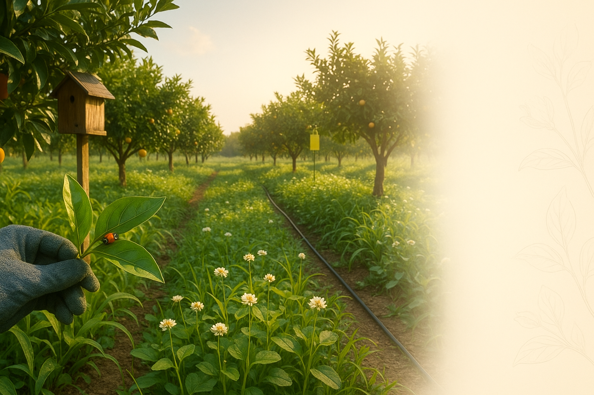

友善栽培
堅持友善農法，守護土地與健康
從產地到餐桌，每一步都用心。我們採用友善環境的栽培方式，不使用除草劑，通過SGS安全驗證，為您提供最安心的優質水果。
🌱 友善栽培
堅持友善農法，守護土地與健康
從產地到餐桌，每一步都用心
友善農法栽培
柑心果園堅持友善環境的栽培方式，不使用除草劑，採用草生管理，讓土壤保持健康活力。我們相信，只有健康的土地，才能孕育出優質的農產品。
草生管理
果園採用草生栽培，不使用除草劑，讓雜草與果樹共生，增加土壤有機質，改善土壤結構。
友善防治
採用生物防治和物理防治方式，減少化學農藥使用，保護生態平衡，讓您吃得更安心。
土壤養護
定期施用有機肥料，改善土壤肥力，讓果樹根系健康發展，結出更優質的果實。
自然熟成
不催熟、不打蠟，讓果實在樹上自然成熟，充分吸收陽光和養分，保留最佳風味。
節水灌溉
採用滴灌系統，精準供水，節約水資源，同時避免土壤流失和病害發生。
循環利用
果園廢棄物堆肥再利用，減少環境負擔，實現農業循環經濟。
安全驗證
我們的農產品通過多項安全驗證，從產地到餐桌，每一步都經過嚴格把關，讓您買得放心、吃得安心。
我們的承諾
✓ 友善環境
不使用除草劑，採用草生管理，保護土壤生態。
✓ 安全無虞
定期送檢，確保農藥殘留符合標準，讓您吃得安心。
✓ 品質保證
嚴選優質果實，人工篩選，確保每一顆都是精品。
✓ 產地直送
採收後 24-48 小時內配送，保留最佳風味和營養。